١) الفكرة ودورة العمل
المكتب بيستلم من مالكي العقارات أوراقًا: جدول (بيان) فيه العملاء والوحدات وعلامات ✓/✗ للشهور وقيم سنوات العقد، ومعها نموذج عقد. المشكلة أن الورقة بتقول «حصل سداد» لكن مش بتقول كام ولا إمتى ولا فاضل إيه، ولا بتفرّق بين «متأخر» و«اتنسى تسجيله». المنظومة بتحوّل كل ورقة إلى كشف رقمي حي ضمن محفظة تكبر لأي عدد، وكل رقم فيها محسوب من العقود والدفعات — مش مكتوب بإيد حد.
1استلام الورقةبيان باسم مالك + صفوف وحدات/عملاء + علامات شهور
2إدخال الكشفمعالج ٣ خطوات: المالك ← الصفوف ← تفريغ العلامات
3مراجعة الجودةكل غموض في الورقة يتحول لسؤال محدد للمالك
4التشغيل اليوميكل تحصيل جديد = دفعة موثَّقة (مبلغ/تاريخ/إيصال) من جدول التحصيل
5المتابعةاللوحة والتحليلات بتديك الاستثناءات — مش مراجعة واحدة واحدة
6التقاريرتصدير CSV يفتح في Excel — الإكسيل للخروج فقط، مش مصدر
٢) المفاهيم الأساسية (اقرأها مرة واحدة وهتفهم كل الشاشات)
| المفهوم | معناه |
|---|
| المشروع | الورقة الواحدة = مشروع مستقل باسم مالكه (مثال: «بيان عبدالمنعم سكرية»). مشاريعك بتضم أي عدد مشاريع، والسلايسر العلوي بيقلب بينها أو يجمعها كلها — والضغط على كارت المشروع في اللوحة بيركّز كل الأرقام عليه. |
| سنة العقد | قيمة الإيجار مربوطة بسنة العقد مش السنة الميلادية. عقد بادئ ٢٠ مايو يعني مايو نفسه فيه سعرين — النظام بيحسب الشهر المقطوع باليوم. |
| التجديد | عقد جديد مربوط بالقديم — القديم عمره ما بيتعدل، فالتاريخ بيفضل كامل. |
| الأكواد | لكل مشروع كود (P1) ولكل وحدة كود تابع لمشروعها (P1-01) — النظام بيولّدهم لوحده. وللعميل كود بتدخله أنت هو رقمه القومي (أو السجل التجاري للشركات)، والنظام بيمنع تكراره لعميلين. اكتب أي كود في خانة البحث فوق وتوصل على طول. الشرح الكامل بأمثلة من بياناتك في «دليل الشرح» جوه النظام. |
| الدفعة الموثَّقة | سداد له مبلغ وتاريخ وطريقة ورقم إيصال — بيتسجل من جدول التحصيل. ده المعيار من النهارده ورايح. |
| علامة الكشف | ✓ أو ✗ منقولة من الورقة القديمة — بتثبت «حصل/ما حصلش سداد» من غير مبلغ ولا تاريخ. النظام بيحسبها بقيمة الاستحقاق كافتراض مُعلن لحد ما تتوثّق. |
| يحتاج تأكيد «؟» | شهر داخل مدة العقد وداخل فترة تغطية الورقة، لكن الورقة ساكتة عنه — النظام مش بيخمّن: بيعلّمه «سداد أم تأخير؟» لحد ما المالك يجاوب. |
| الحالة محسوبة | «متأخر» نتيجة مقارنة (استحقاق − مسدد) بعد يوم الاستحقاق + أيام السماح — مش خانة حد بيملّيها. |
| رد المالك | إجابة المالك على سؤال مراجعة. بتتسجل نصيًا مع البند وبتقفله — وسجل الردود بيفضل محفوظ. |
| التقييم العام | مؤشر مجمَّع 0–100: تحصيل (40) + إشغال (25) − خصومات عدم التأكيد وتعمّر المتأخرات وتركّز الانتهاءات — رقم واحد بيقولك مشاريعك ماشية إزاي. |
| خسارة الشواغر | كل وحدة شاغرة بتتحسب خسارتها الشهرية (من آخر إيجار ليها أو متوسط نوعها) + من إمتى شاغرة + إجمالي اللي ضاع. |
| داخل / خارج | لكل شهر جاي: عقود بتبدأ وعقود بتنتهي من غير تجديد، وأثرها على الدخل بالنسبة المئوية. |
| ألارم الشهرين | أي عميل عليه شهرين متتاليين غير مسددين بيظهر في كارت أحمر أول اللوحة باسمه ومشروعه والمبلغ — والضغط عليه بيفتح ملفه الكامل. |
٣) لوحة المؤشرات — من فوق لتحت زي ما المدير بيفكر
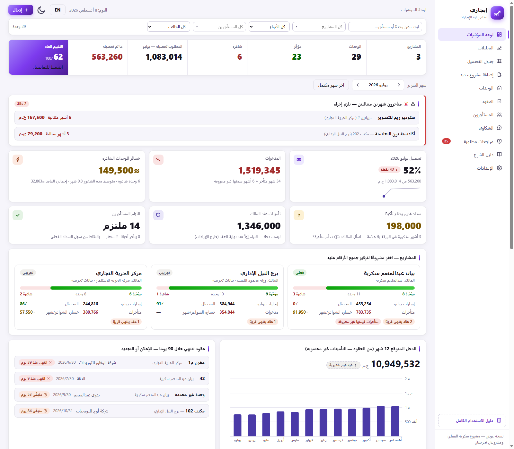
العناصر بترتيب ظهورها من أعلى — وكل كارت بتضغط عليه بيوديك للشاشة مفلترة على اللي ضغطت عليه بالظبط:
- سطر مشاريعك: المشاريع · الوحدات · مؤجَّرة · شاغرة · المطلوب تحصيله للشهر · ما تم تحصيله · التقييم العام /100. الاستخدام: الصورة الكاملة في ثانيتين — «مؤجَّر» و«شاغرة» بيوديك لقائمة الوحدات المطابقة مباشرة.
- 🚨 ألارم الشهرين: كارت أحمر بأي عميل عليه شهرين+ ورا بعض غير مسددين: اسمه، مشروعه، عدد الشهور، والمبلغ. الضغط بيفتح ملف العميل الكامل بسجل سدادة شهرًا بشهر. الحساب: شهور «يحتاج تأكيد» لا بتقطع السلسلة ولا بتزودها — معلومة ناقصة مش اتهام.
- بطاقات المشاريع: لكل مشروع: المالك، شريط مؤجَّر/شاغرة، إيجارات الشهر، نسبة التحصيل، المتأخرات، وخسارة الشاغرة شهريًا — والتولتيب فيه التفاصيل. الاستخدام: ضغطة واحدة بتركّز المنظومة كلها على المشروع ده (نفس السلايسر).
- كروت الفلوس: التحصيل (بمؤشر ▲▼ عن الشهر السابق) → جدول التحصيل · المتأخرات → الجدول مفلتر «عليها متأخرات» · خسائر الوحدات الشاغرة (شهريًا + من إمتى + اللي ضاع) → الوحدات الشاغرة بس · سداد يحتاج تأكيد → المراجعات · التأمينات (ليست دخلًا — درج بتفاصيلها) · التزام العملاء بالنقاط.
- الدخل المتوقع 12 شهر + داخل/خارج: أعمدة الدخل الجاي من العقود (التأمينات مفصولة)، وتحتها شارات الشهور اللي فيها حركة: «أكتوبر: −1 خارجة → الدخل −6%» — والضغط بيفتح جدول الحركة كامل.
- عقود تنتهي خلال 90 يومًا: قائمة جاهزة للتصرف: المشروع، الوحدة، العميل، التاريخ، و«متبقّي X يوم» أو «انتهى منذ X يوم» — أعلن أو جدد.
- التحصيل شهرًا بشهر (رسم): عمود فاتح = المطلوب، التعبئة = اللي المحصَّل، و«؟» تحت الشهور اللي فيها «يحتاج تأكيد». الزمن بيجري يمين←يسار زي الجدول. الحساب: المحصَّل (دفعات موثقة بمبلغها + علامات ✓ بقيمة الاستحقاق) ÷ المستحق (إيجار سنة العقد + صيانة + ضريبة، باليوم للشهور المقطوعة).
- من لم يسدِّد؟ إجابة مباشرة بالاسم والمشروع والمبلغ والحالة لشهر التقرير — مرتبة بالأكبر، والضغطة بتفتح خلية الشهر للتسجيل فورًا.
- أعمار المتأخرات + آخر الحركات: توزيع المتأخرات على شرائح (١–٣٠ / ٣١–٦٠ / ٦١–٩٠ / +٩٠ يوم) — شريحة +٩٠ الأخطر ابدأ بيها. وجنبها سجل بكل عملية إدخال بوقتها.
٤) التحليلات — القراءات الجاهزة
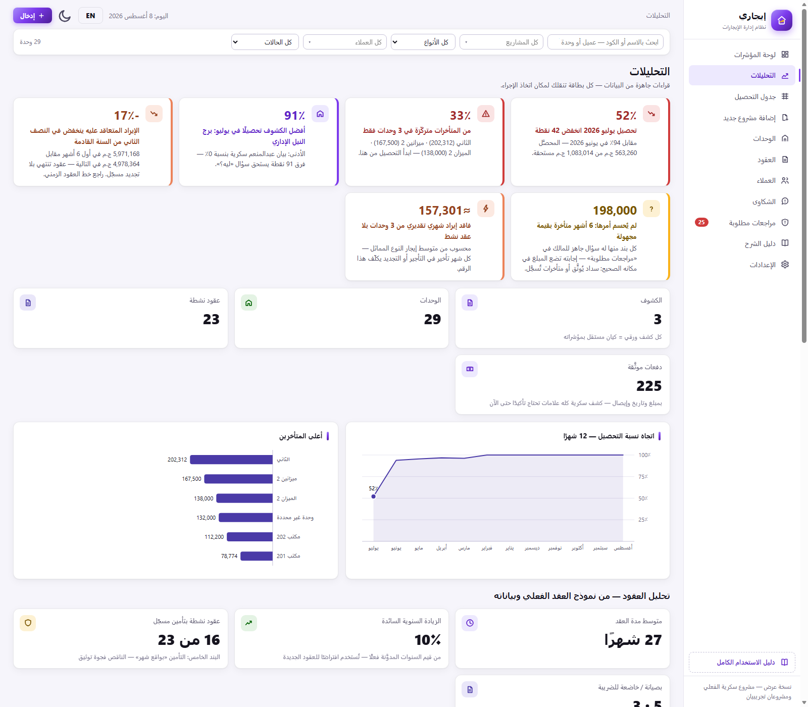
- بطاقات الإنسايتس: جُمل محسوبة تلقائيًا من البيانات، كل بطاقة بلون خطورتها وبتوديك لمكان الإجراء: تغير التحصيل عن الشهر السابق بالنقاط · تركّز المتأخرات (٣ وحدات = كام ٪ من الإجمالي) · أفضل/أدنى كشف تحصيلًا · منحدر الإيراد التعاقدي (النصف الأول مقابل الثاني) · الفجوة المعرفية (غير الموثق + مجهول القيمة) · فاقد الشواغر التقديري (متوسط إيجار النوع × الوحدات الشاغرة). ملاحظة: كلها بتتحسب من نفس محرك الأرقام — مفيش رقم «مكتوب».
- اتجاه نسبة التحصيل ١٢ شهر: خط بيوضح الانتظام والانكسارات.
- أعلى المتأخرين: ترتيب الوحدات بمبلغ المتأخرات — قايمة التحصيل بالأولوية.
- حالة الوحدات (دونات): مؤجَّرة / منتهية بلا تجديد / بلا عقد أو شاغرة.
- متوسط الإيجار الشهري بالنوع: مرجع تسعير سريع لأي تفاوض جديد.
- التزام السداد بالعميل: نسبة الدفعات اللي جت في ميعادها (يوم الاستحقاق + السماح) لكل عميل عنده ٣ دفعات موثقة فأكثر — ملتزم / متذبذب / متعثر. مهم: بيتحسب من الدفعات الموثَّقة فقط — كشف سكرية كله علامات، فبياناته هتظهر هنا مع أول شهور التوثيق.
- توزيع المحصَّل بطريقة السداد: نقدًا / إنستاباي / تحويل / شيك.
٥) جدول التحصيل — قلب الإدخال اليومي
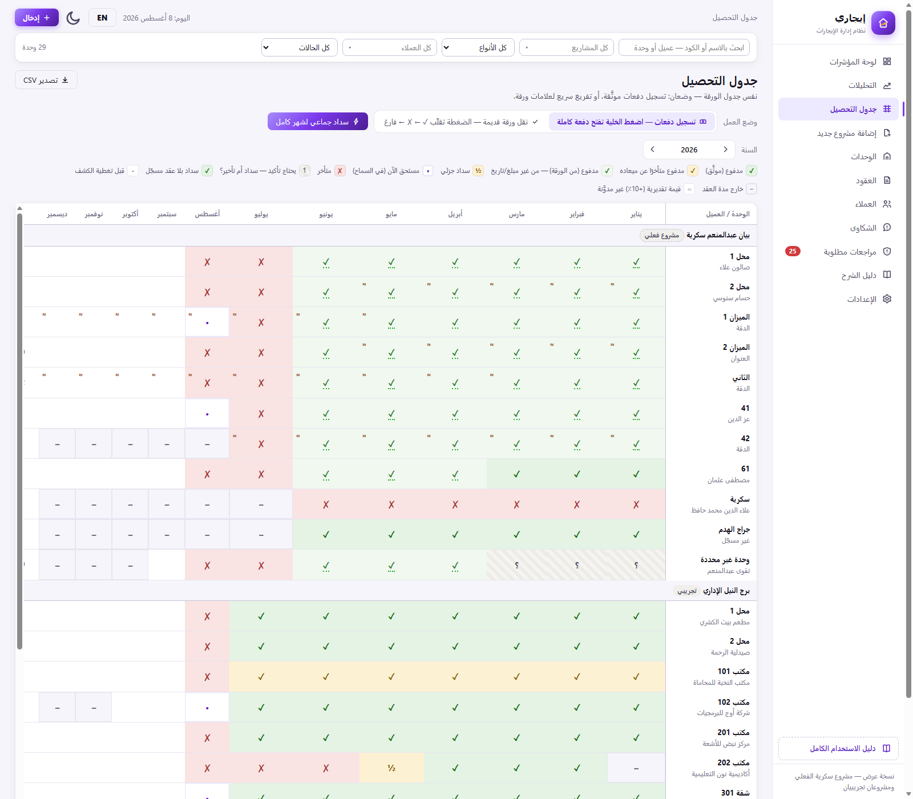
- وضعا العمل: تسجيل دفعات (الافتراضي): الضغط على خلية يفتح درج دفعة كاملة — المبلغ متعبّي تلقائيًا بالمتبقي، والتاريخ باليوم، وطريقة وإيصال وملاحظات. تفريغ ورقة: الضغطة بتقلّب الخلية ✓ ← ✗ ← شاغرة بسرعة الورقة — للتاريخ القديم فقط.
- دليل الرموز: ✓ مدفوع موثَّق · ✓ بشرطة منقطة مدفوع من الكشف (بلا مبلغ/تاريخ) · ✓ برتقالي مدفوع متأخرًا · ½ جزئي · ✗ متأخر · • مستحق في السماح · ؟ غير موثَّق · – خارج مدة العقد · ≈ قيمة تقديرية غير مدوّنة.
- سداد جماعي لشهر كامل: يفتح قايمة كل الوحدات اللي عليها مستحق في الشهر — علّم اللي دفعوا واكتب التاريخ والطريقة مرة واحدة. الاستخدام: ده حل «مش هعلم واحدة واحدة» — أول الشهر بتقفل الأغلبية في دقيقة، والاستثناءات بس هي اللي بتتشغل عليها.
- صف الإجمالي وعمود المتأخرات: محصَّل/مستحق لكل شهر، ومجموع متأخرات كل وحدة آخر الصف.
- لو الكشف فارغ: الشاشة بترشدك بزر «أضف صفوف الكشف» بدل شبكة فارغة — العلامات بتتعلم على صفوف (وحدة+عميل+عقد).
٦) إضافة مشروع جديد — من الورقة للمنظومة في ٣ خطوات
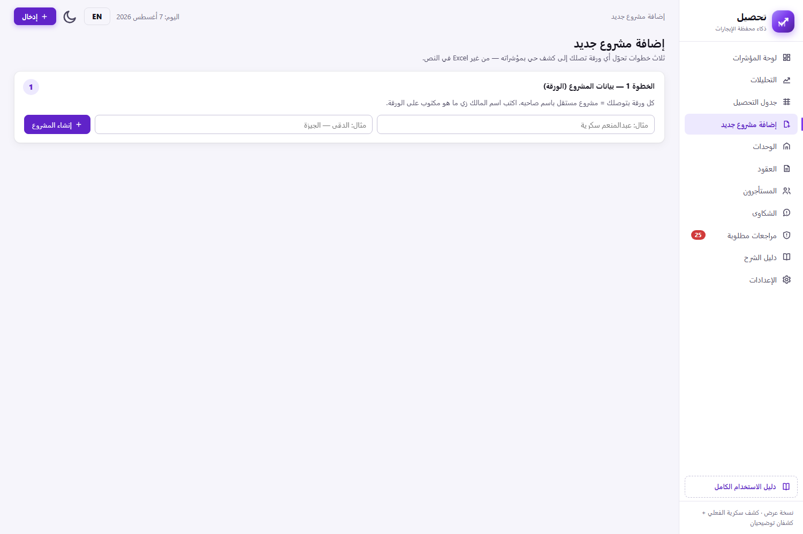
- الخطوة ١: اسم المالك زي ما هو مكتوب على الورقة (+ المنطقة) — بيتعمل «بيان فلان» ككشف مستقل.
- الخطوة ٢: صف لكل سطر في الورقة: العميل، الوحدة، النوع (حر — اكتب أي نوع)، بداية العقد، قيم السنوات المدوّنة (١/٢/٣ زي أعمدة الورقة بالظبط)، التأمين، ملاحظات. النهاية بتتحسب تلقائيًا فمستحيل «نهاية قبل بداية». لو خانة مش موجودة في الورقة سيبها شاغرة — وحدة من غير عقد بتتسجل «بلا عقد مسجّل» بصدق زي حالة سكرية.
- الخطوة ٣: زر بينقلك لجدول التحصيل على الكشف الجديد بوضع التفريغ — علّم ✓/✗ زي الورقة، وسيب الخانة الفارغة فارغة.
بعد التفريغ روح فورًا لشاشة جودة البيانات — أي غموض في الورقة هتلاقيه اتحول لسؤال جاهز تسأله للمالك.
٧) الوحدات
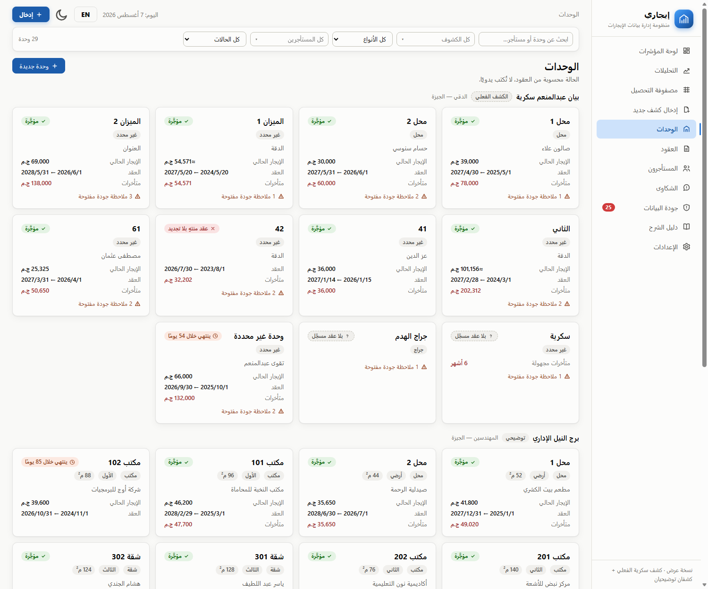
- بطاقات بالكشف: لكل وحدة: النوع/الدور/المساحة، العميل الحالي، مدة العقد، الإيجار الحالي (≈ لو تقديري)، متأخراتها، وعدد ملاحظات الجودة المفتوحة عليها. الحالة (مؤجَّرة / ينتهي خلال X / منتهٍ بلا تجديد / بلا عقد / شاغرة) محسوبة من العقود.
- ملف الوحدة (بالضغط): سلسلة عقودها كاملة بجداول سنواتها، التأمين، وملاحظات الجودة — وزر «عقد جديد لهذه الوحدة».
٨) العقود والخط الزمني
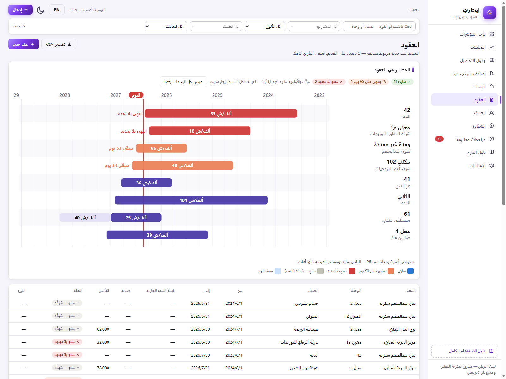
- الخط الزمني (جانت): كل وحدة سطر، وكل عقد شريط من بدايته لنهايته. الأزرق ساري، البرتقالي ينتهي خلال ٩٠ يوم (مع شارة «متبقّي X يوم»)، الأحمر منتهٍ بلا تجديد (معلَّم صراحة)، الرمادي الباهت اتجدد، والفاتح مستقبلي. قيمة الإيجار الشهري مكتوبة جوه الشريط، والوصلة المنقطة بتربط العقد بتجديده، وخط «اليوم» الأحمر بيقطع الكل. مرتّب بالأولوية: المنتهي بلا تجديد فوق. دوسة على أي شريط تفتح ملف الوحدة.
- الجدول: كل العقود بقيمة سنتها الجارية والصيانة والتأمين والحالة والنوع (تجديد/جديد).
- معالج عقد جديد — بترتيب شغل المكتب: ١) العميل: اكتب حرفين من اسمه أو أرقامًا من رقمه القومي فيظهر، أو اختر «+ عميل جديد» فتظهر لك ٣ خانات (الاسم، الرقم القومي، الهاتف) وتُسجّله وأنت مكانك. ٢) المشروع: قائمة بأكواد المشاريع. ٣) الوحدة: القائمة تعرض الشاغر فقط في تاريخ البداية اللي اخترته، وتحتها سطر بيقول «كام وحدة شاغرة من إجمالي كام» — ولو بتسجّل تجديد على وحدة مشغولة علّم «عرض كل الوحدات». ٤) الشروط: البداية وعدد السنوات وقيمة السنة الأولى ونسبة الزيادة (١٠٪ الافتراضي — نمط عقودكم) ← جدول السنين بيتولد ويتعدل، مع تحذير تداخل لو فيه عقد قائم. بنود العقد الحقيقي ممثلة: يوم الاستحقاق (البند: أول الشهر الميلادي)، الصيانة الشهرية (البند الرابع)، ض.ق.م على العميل (البند العاشر)، التأمين (البند الخامس).
٩) العملاء — وملف كل عميل
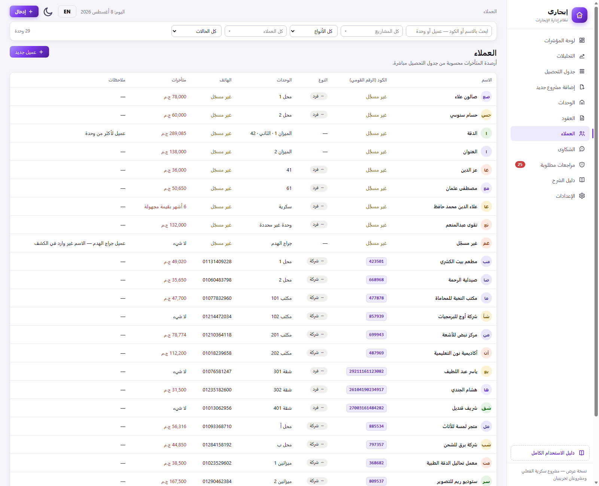
- الجدول: الاسم، كود العميل (الرقم القومي)، النوع (فرد/شركة)، وحداته، تليفونه، ومتأخراته محسوبة من جدول التحصيل مباشرة — بما فيها «X أشهر بقيمة مجهولة» لو مفيش عقد مسجل. البحث بيلاقي العميل بالاسم أو الكود أو التليفون، ومن أي شاشة.
- ملف العميل: دوسة على أي صف بتفتح الملف الكامل: وحداته وعقوده (من/إلى/الإيجار الحالي)، آخر سداد مسجَّل (المبلغ والتاريخ وعن أي شهر — ولو سداده كله من ورقة المالك بيقولك آخر شهر مؤشَّر ✓)، إجمالي متأخراته، وسجل السداد شهرًا بشهر: المستحق والمسدَّد وتاريخ السداد وحالة كل شهر، الأحدث فوق — وكل سطر بيفتح خلية الشهر نفسها لو عايز تسجل دفعة. نفس الملف بيتفتح من ألارم المتأخرين في اللوحة.
- التعديل: من نفس الملف تحت «تعديل البيانات» — الاسم والكود (الرقم القومي) والتليفون والملاحظات. لو الكود مسجَّل لعميل تاني النظام بيرفض ويقولك اسمه (التليفون هيبقى أساس تنبيهات الواتساب في مرحلة الأتمتة).
١٠) الشكاوى والصيانة
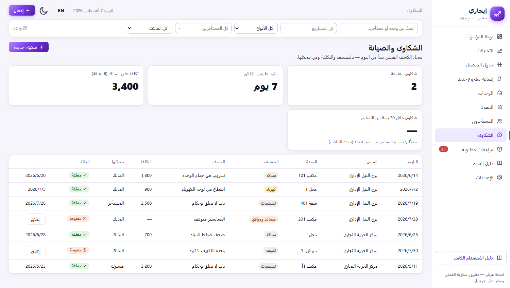
- المؤشرات: مفتوحة، متوسط زمن الإغلاق، تكلفة على المالك — ومؤشر «شكاوى خلال ٣٠ يوم من التسليم» (جودة تشطيب) معطَّل بأمانة لحد ما تواريخ التسليم تتسجل.
- السجل: تاريخ/كشف/وحدة/تصنيف/وصف/تكلفة/مين يتحملها (مالك/عميل/مقاول/مشترك)/حالة — وزر إغلاق بيحسب زمن المعالجة.
١١) مراجعات مطلوبة — و«رد المالك» يعني إيه
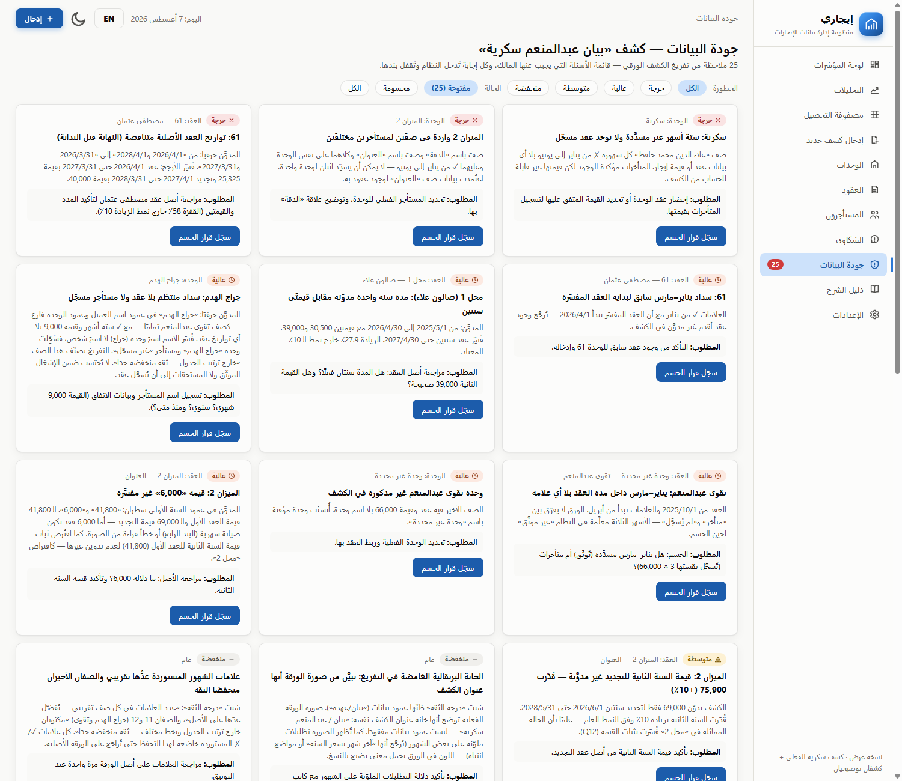
- إيه اللي هنا: كل تناقض أو نقص في الورقة الأصلية اتسجل ببند: النص الحرفي من المصدر + التفسير اللي اتعمل + سؤال محدد للمالك. أمثلة حقيقية: وحدة ٦١ نهايتها قبل بدايتها، الميزان ٢ في صفين، سكرية ٦ أشهر ✗ من غير عقد، القيم التقديرية +١٠٪.
- الحسم: لما المالك يجاوب («أيوه المدة سنتين والقيمة ٣٩,٠٠٠ صح») بتدوس «سجّل رد المالك» وتكتب الإجابة — البند بيتقفل والقرار بيتحفظ نصيًا في السجل للأبد، وتقدر تعيد فتحه. وبعد الحسم بتدخل التصحيح نفسه في مكانه (تعديل عقد/توثيق دفعة…).
- الفلاتر: بالخطورة (حرجة/عالية/متوسطة/منخفضة) وبالحالة (مفتوحة/محسومة).
- ليه ده ذهب؟ قدام المالك، القايمة دي بتحول الكلام من «عايز موقع» لـ«عايز أعرف أرقامي» — وبتثبت إن المنظومة قرت ورقته أعمق ما هو قراها.
١٢) الإعدادات
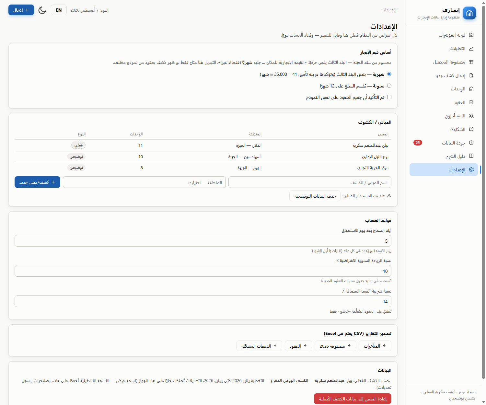
- أساس قيم الإيجار: شهري — محسوم من البند الثالث في عقد العينة («جنيه شهريًا فقط لا غير»). التبديل لسنوي موجود احتياطيًا لكشف بنموذج مختلف، وبيعيد حساب كل حاجة فورًا.
- الكشوف/المباني: إضافة كشف، وعدد وحدات كل كشف — وزر حذف البيانات التوضيحية (برج النيل ومركز الحرية) لما تبدأ الشغل الفعلي.
- قواعد الحساب: أيام السماح بعد يوم الاستحقاق، نسبة الزيادة الافتراضية، نسبة ض.ق.م.
- التصدير: التقرير الشامل (Excel) — ملف واحد بثماني أوراق منسَّقة: ملخص المشاريع · العقود بكل سنواتها · العملاء وأرصدتهم · المتأخرات بشرائح أعمارها · جدول التحصيل للسنة · الدفعات الموثَّقة · الوحدات الشاغرة وخسارتها · المراجعات المطلوبة. كل ورقة لها عنوان وسطر شرح، والأرقام أرقام حقيقية (تتجمع وتترتب في Excel مباشرة) والاتجاه من اليمين. وجنبه تصديرات CSV مفردة لمن يريد بيانات خامًا.
- إعادة التعيين: رجوع كامل لبذرة الكشف الأصلية (بيمسح المدخلات — بياخد تأكيد).
١٣) أسئلة البيزنس → فين إجابتها
| السؤال | مكان الإجابة |
|---|
| من لم يسدِّد الشهر ده/اللي فات؟ | اللوحة ← كارت «من لم يسدِّد؟» (غيّر شهر التقرير بالأسهم) — بالاسم والمبلغ والحالة |
| فين فلوسي المتأخرة وعند مين؟ | كارت المتأخرات + التحليلات ← «أعلى المتأخرين» + عمود المتأخرات في جدول التحصيل |
| مين هيفضى قريب؟ وأجدد لمين؟ | كارت التجديدات + جانت العقود (البرتقالي والأحمر فوق) |
| الوحدة الفلانية عقدها عامل إزاي؟ | البحث باسمها ← ملف الوحدة (سلسلة العقود كاملة) |
| مين العميل الملتزم ومين المتعثر؟ | التحليلات ← «التزام السداد بالعميل» |
| الإيراد الجاي متأمّن ولا لأ؟ | «الإيراد المتعاقد ١٢ شهر» + إنسايت المنحدر |
| أسعّر الوحدة الجديدة بكام؟ | التحليلات ← «متوسط الإيجار الشهري بالنوع» |
| إيه الأسئلة المعلقة مع المالك؟ | جودة البيانات (المفتوحة) — كل سؤال ببنده ومصدره |
١٤) الإدارة عند ١٠٠٠ وحدة — الشغل بالاستثناء
الفكرة إنك مش بتراجع ١٠٠٠ صف — بتراجع الاستثناءات:
- أول الشهر: سداد جماعي لكل كشف — اللي دفعوا بيتقفلوا دفعة واحدة بنفس التاريخ والطريقة.
- اللي فضلوا هما «من لم يسدِّد؟» — قايمة قصيرة بالاسم والمبلغ، اتصل وسجّل أولًا بأول.
- السلايسرز بتقسم الشغل: كشف كشف، أو حالة «عليها متأخرات» بس، أو عميل واحد عبر كل وحداته.
- البحث واحد لكل حاجة: اسم، وحدة، مالك، تليفون، رقم إيصال — بالتطبيع العربي والأرقام الهندية.
- التنبيهات (تجديدات/متأخرات مركزة/جودة) بتجيبلك الشغل — مش إنت اللي بتدور عليه.
١٥) دليل الشرح داخل النظام — المرجع الحي
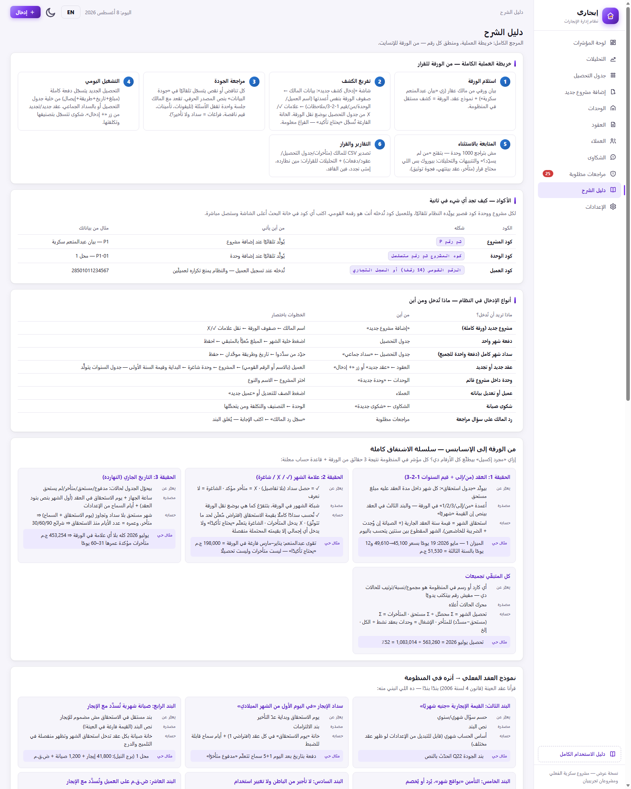
نفس المحتوى ده موجود جوه النظام في شاشة «دليل الشرح»، بس بأمثلة حية من بياناتك الفعلية بتتحدّث لوحدها: خريطة العملية، جدول الأكواد (كود مشروعك وكود وحدتك الحقيقيين)، أنواع الإدخال وخطوات كل نوع، وسلسلة الاشتقاق من الورقة للإنسايت، وبنود العقد الفعلي وأثر كل بند، وتوثيق كل كارت في كل شاشة: يعبّر عن إيه، مصدره إيه، بيتحسب إزاي، ومثال برقم من عندك.
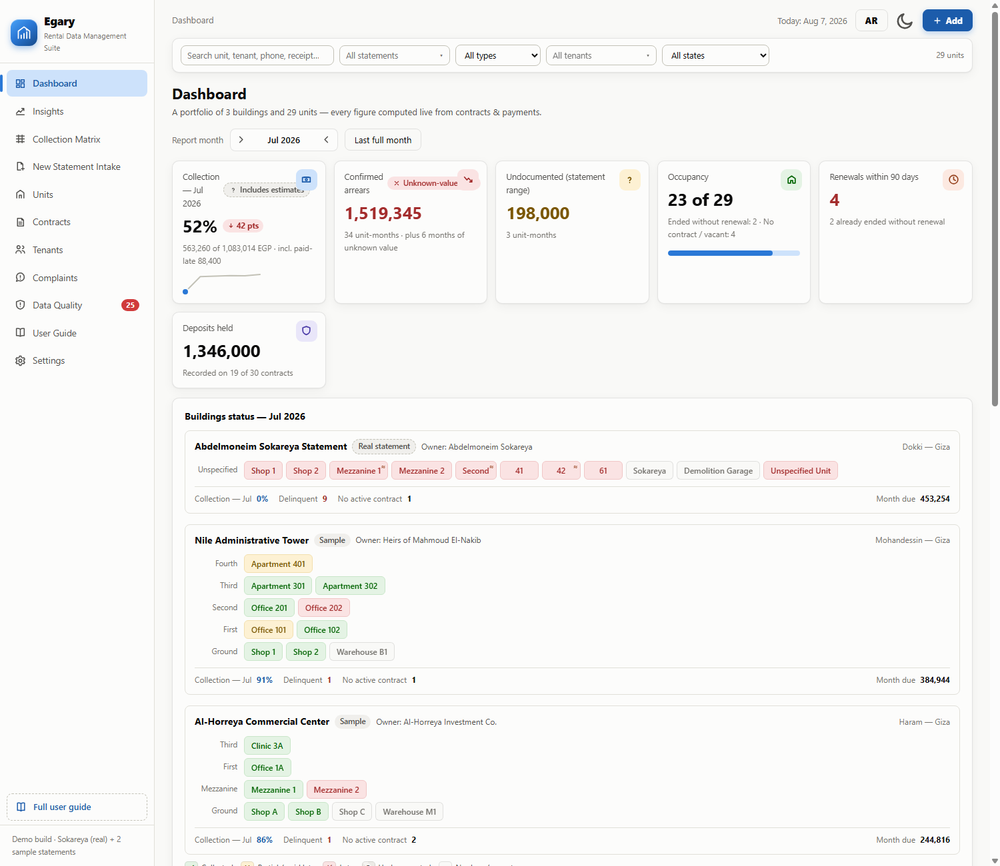
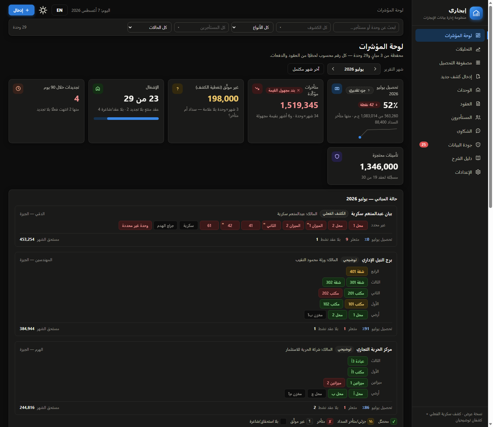
زر EN / ع بيقلب الواجهة كلها إنجليزي بتخطيط LTR كامل (أسماء البيانات العربية بتفضل كما أُدخلت)، وزر الهلال/الشمس بيقلب الوضع الليلي — والرسوم البيانية نفسها بتتقلب بألوان معايرة للخلفية الداكنة. الاختيارات بتتحفظ. للعروض: ?lang=en و ?theme=dark في الرابط.
١٧) تسجيل الدخول والمستخدمون
- الصفحة: دخول بهوية إيجاري الكاملة — خلفية تفاعلية (شبكة بتتبع الماوس + كرة دوّارة)، إظهار/إخفاء كلمة المرور، تحذير الحروف الكبيرة، واهتزاز عند الخطأ.
- المستخدمون الحاليون (٣ أدوار): admin مدير — كل الشاشات · office موظف — كل حاجة عدا الإعدادات · zaer مشاهدة فقط — بلا إدخال ولا إعدادات (زر «إدخال» وشاشتا الإضافة والإعدادات بيختفوا). اسم الداخل ودوره بيظهروا أعلى الشاشة مع زر خروج.
- تعديلهم: الأسماء وكلمات المرور في أول
<script> داخل app/login.html — قائمة واضحة تعدّلها بمحرر نصوص.
- بأمانة: ده تنظيم استخدام داخل المكتب مش حماية أمنية حقيقية — الكود والبيانات كلها على جهاز المستخدم. القفل الفعلي (حسابات على خادم وسجل حركات) جاي مع النسخة التشغيلية. نسخة الملف الواحد
Egary.html اللي بتتبعت للعرض من غير دخول أصلًا.
١٨) حدود النسخة الحالية والخطوة التالية
| النقطة | الوضع الحالي | النسخة التشغيلية |
|---|
| التخزين | محلي على المتصفح (localStorage) — مثالي للعرض والتجربة | خادم + قاعدة بيانات، نفس الواجهة |
| المستخدمون | تسجيل دخول تنظيمي بثلاثة أدوار (على المتصفح) | حسابات حقيقية على الخادم وصلاحيات مدقَّقة وسجل تعديلات لكل حركة |
| الأتمتة | — | تنبيهات واتساب قبل الاستحقاق وبعد التأخير، إيصالات PDF، تنبيه تجديد −٩٠ يوم |
| البيانات التوضيحية | كشفان توضيحيان معلَّمان بوضوح | بتتحذف بزر واحد من الإعدادات |
| تبديل عميل في منتصف الشهر | الشهر المكسور يُحسب على العقد القائم في أوله (قاعدة معلنة) — حصة العميل الجديد من بقية الشهر تُسوَّى يدويًا مؤقتًا | شاشة «تسوية خروج» تقسم الشهر المكسور بين العقدين وتحسم التأمين (البند التاسع) |
إيجاري (Egary) — وثيقة التسليم · الكود بلا أي تبعيات خارجية ويعمل من فتح app/index.html مباشرة أو من أي استضافة ثابتة (GitHub Pages).